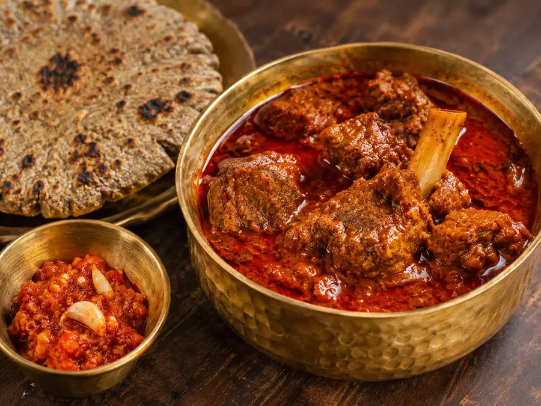
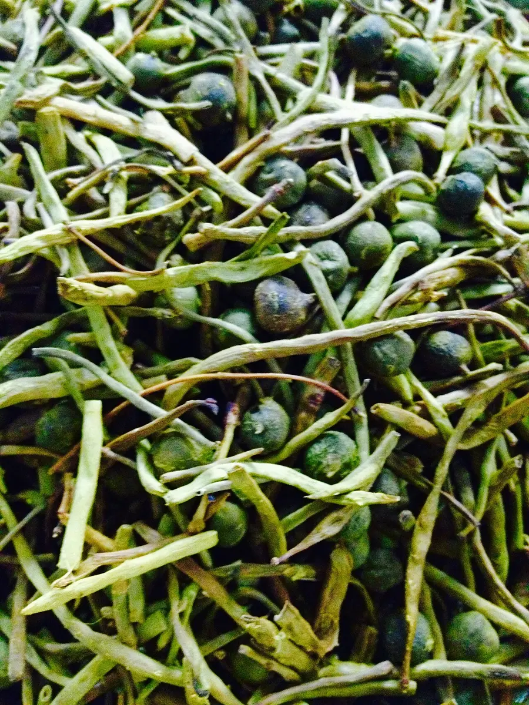
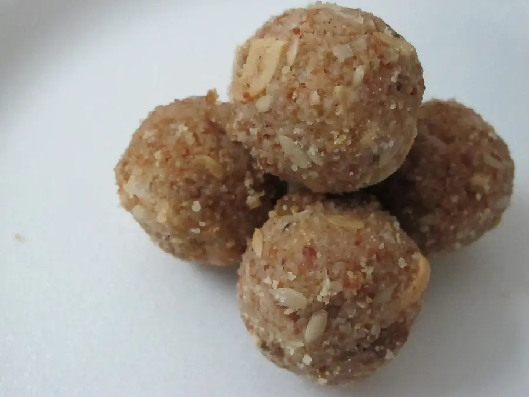

The Winter Menu
Warming dishes of a Rajasthani winter.
A full vegetarian menu is available. Please tell us about allergies and dietary needs when you book.
Non-Vegetarian Non-veg

Laal Maas
Mutton slow-cooked in a fiery red chilli gravy, the Rajput signature.
Safed Maas
A mild, creamy white mutton curry with yoghurt, cashew and gentle spices. A good choice if you prefer less heat.
Maas ka Soola
Marinated mutton skewers grilled over a fire, smoky and tender.
Vegetarian Veg
Dal Baati Churma
Baked wheat balls dipped in ghee, with spiced dal and sweet crumbled churma.
Gatte ki Sabzi
Gram-flour dumplings simmered in a tangy, spiced yoghurt gravy.
Ker Sangri
A desert dish of dried ker berries and sangri beans, tangy and gently spiced.
Panchmel Dal
Five lentils cooked together and finished with a sizzling tempering of spices.
Mangodi ki Sabzi
Small sun-dried moong dal dumplings cooked in a light, spiced gravy.
Bajra Khichdi
Pearl millet and lentils cooked soft: a hearty, comforting winter dish.
Breads and sides
Bajre ki Roti with lasun chutney
Rustic pearl-millet flatbread with a sharp, fiery garlic chutney.
Ghee-soaked rotis
Soft wheat rotis, generously brushed with ghee.
Kachumber salad
Fresh chopped onion, tomato and cucumber, lightly seasoned.
Papad
Thin, crisp lentil wafers.
Chutney selection
A few chutneys to add heat, tang or freshness.
Dessert and drinks
Moong Dal Halwa
A warm, rich winter dessert of moong dal slow-cooked in ghee.
Gond Laddu
A winter sweet made with edible gum, ghee, flour and nuts.
Masala Chai
Spiced tea simmered with milk to close the meal.


